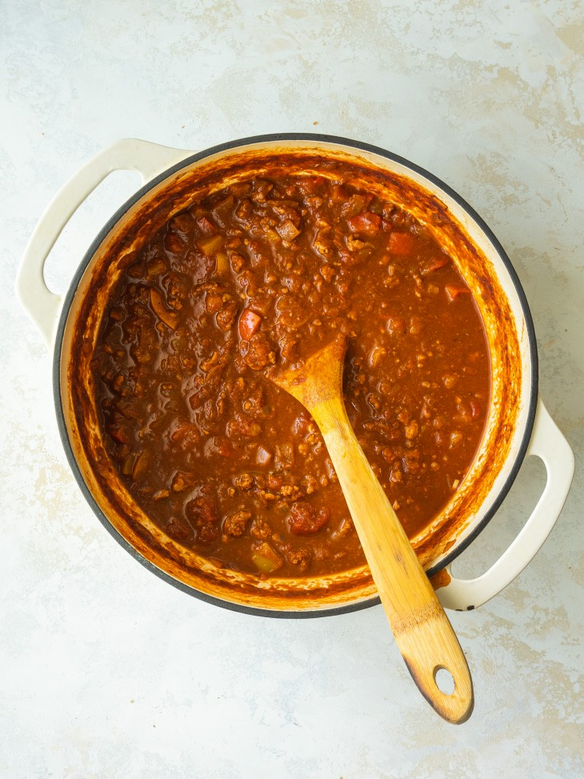

Descrption
Make this easy No Bean Turkey Chili recipe for game day or busy weeknights. Top this low carb no bean chili with your favorite chili toppings!
Ingredients
- 2 1/2lbs choice of ground meat
- 1 medium yellow onion
- 3 cloves of garlic
- 2 (15 ounce) cans of tomato sauce
- 1 (15 ounce) can fire-roasted diced tomatoes
- 1 (15 ounce) can crushed tomatoes
- 1/2 (4 ounce) can diced jalapeno peppers
- 1/4 cup Worcestershire sauce
- 1 tablespoon taco seasoning mix
- 1 tablespoon ground cumin
- 1 teaspoon garlic powder
- 1 teaspoon onion powder
- 1 teaspoon dried oregano
- salt and pepper to taste
Steps
- Heat a large skillet over medium-high heat. Cook and stir ground beef, onion, and garlic until meat is browned and crumbly and onion is translucent, 5 to 7 minutes.
- Drain ground beef in a colander
- Transfer meat to a slow cooker; add tomato sauce, diced tomatoes, crushed tomatoes, jalapenos, Worcestershire sauce, taco seasoning, cumin, garlic powder, oregano, salt and pepper. Stir to combine ingredients.
- Cover and cook, adding water as needed to thin out chili, on Low for 8 hours.
Return to Top
Return to Main Page